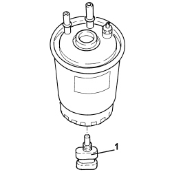

1044B10 FUEL FILTER ASSEMBLY - R + R OR REPLACE
- Path
- Procedures > 10 ENGINE > 1044 FUEL CIRCUIT PUMP/S AND DEVICES > 1044B FUEL FILTERS > 1044B10 FUEL FILTER ASSEMBLY - R + R OR REPLACE
- Kind
- repair procedure (removal / refitting; the operation number is the code)
- Applies to
- engines: 1.9 JTD 8V, 1.9 JTD 16V, 2.4 JTD 20V; all production periods
- Interactive page
- https://sloeber94.github.io/elrnDB/alfa/159/en/#/939010509
Applies to: engines: 1.9 JTD 8V, 1.9 JTD 16V, 2.4 JTD 20V; all production periods
 Removing
Removing
 Refitting
Refitting- Make sure that the ignition key is in the OFF position, then disconnect the battery terminal (-).
Description | Connector | |
|---|---|---|
- | Battery |
1. Disconnect the rapid connectors from the fuel filter, fuel filter side.
2. Unscrew nut (2a) and open fuel filter bracket (2b).
3. Raise the fuel filter assembly (3a) by the required amount and disconnect the electrical connection (3b) from the water presence sensor, then remove.
Description | Connector | |
|---|---|---|
3b | Fuel temperature and water in fuel filter sensor |

Applies to: engines: 1.9 JTD 8V, 1.9 JTD 16V, 2.4 JTD 20V; all production periods
1. Working at the bench, unscrew the water presence sensor in the fuel filter and remove.

Applies to: engines: 1.9 JTD 8V, 1.9 JTD 16V, 2.4 JTD 20V; all production periods
Refitting
Removing- Refit the water sensor in its seat on the fuel filter.
- Connect the electrical connection to the water presence sensor, then refit the fuel filter assembly in its seat.
- Secure with fuel filter with its bracket and tighten the nut.
- Connect the rapid connectors for the fuel pipes, fuel filter side.
- Connect the negative battery terminal.
Topics linked from this page (2)
Topics that link to this page (11)
- 1060GQ CHECK OPERATION OF SENSOR DETECTING PRESENCE OF WATER IN DIESEL FILTER
- 0010K60 60,000KM SERVICE
- 0010M20 120,000KM SERVICE
- 0010M80 180,000KM SERVICE
- 5530A10 ALTERNATOR - R+R
- E5050 DIESEL ENGINE ELECTRONIC MANAGEMENT WIRING DIAGRAM
- E5050 DIESEL ENGINE ELECTRONIC MANAGEMENT COMPONENT LOCATION
- E5050 DIESEL ENGINE ELECTRONIC MANAGEMENT WIRING DIAGRAM
- E5050 DIESEL ENGINE ELECTRONIC MANAGEMENT COMPONENT LOCATION
- E5050 DIESEL ENGINE ELECTRONIC MANAGEMENT WIRING DIAGRAM
- E5050 DIESEL ENGINE ELECTRONIC MANAGEMENT COMPONENT LOCATION